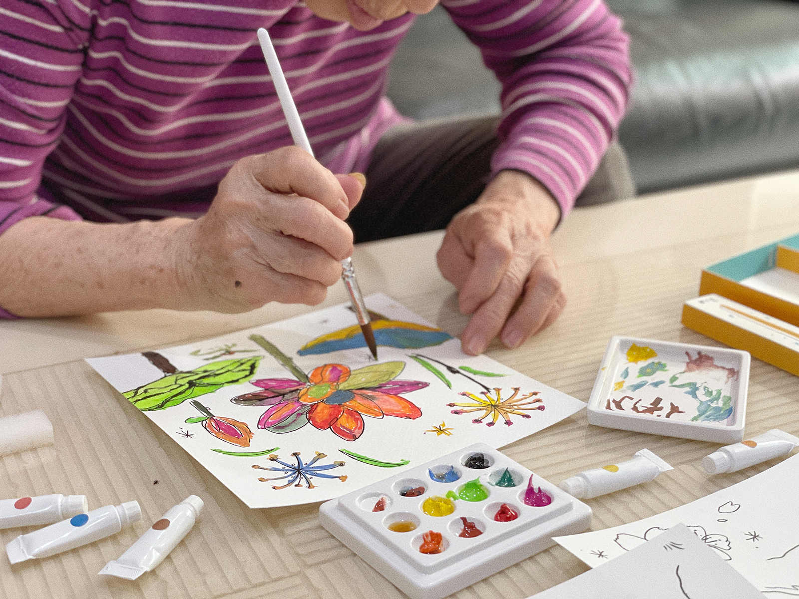
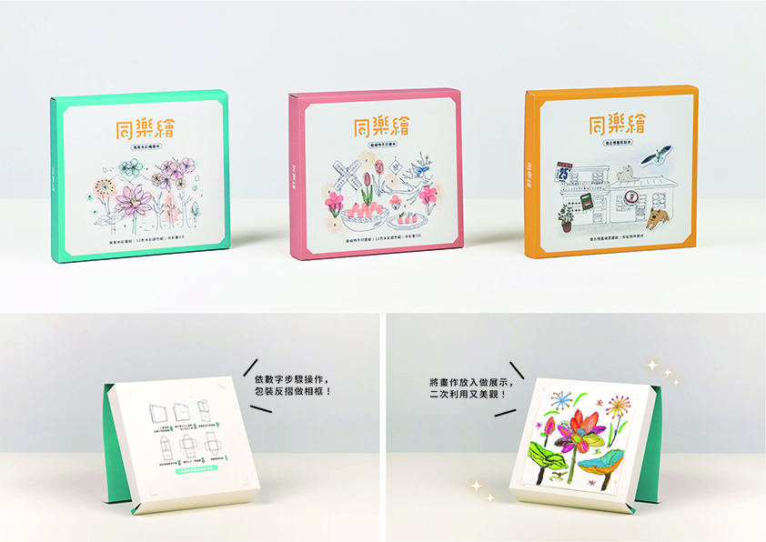
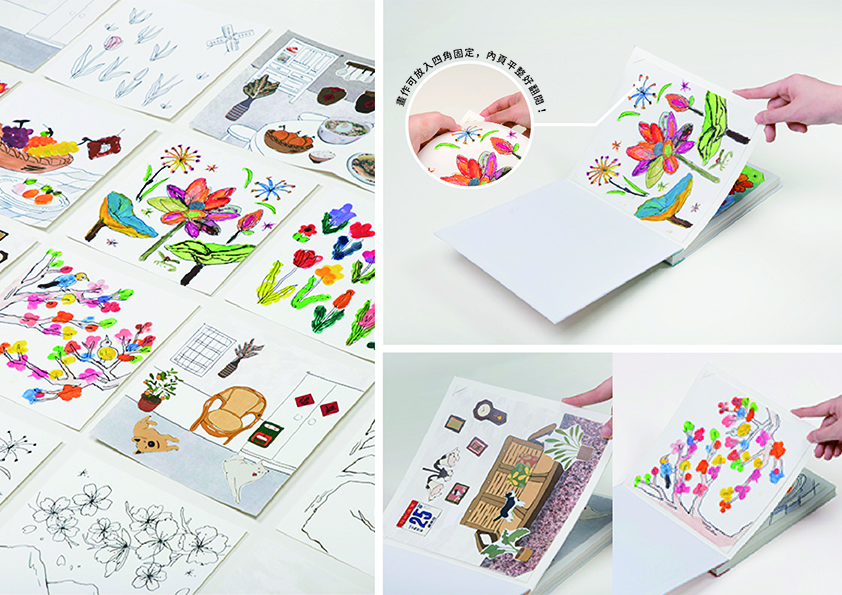
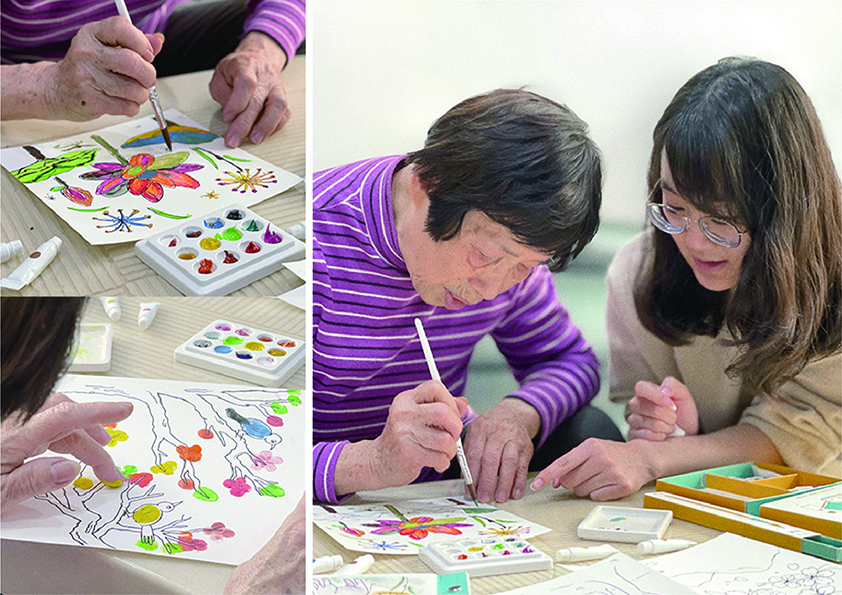
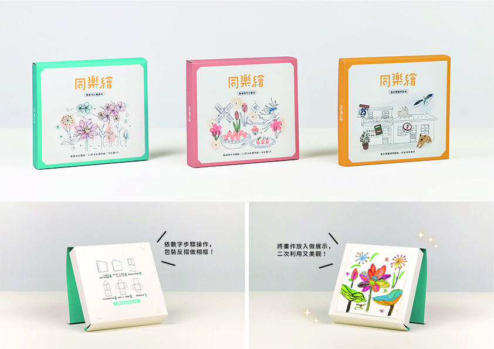
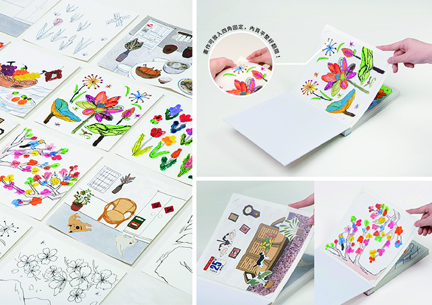
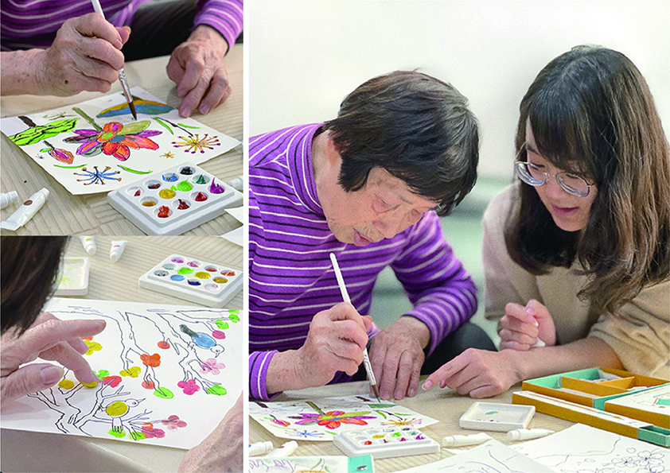

同樂繪
組員 | 何亮萱：畫冊設計 / 包裝設計、鄭子宣：畫冊設計 / 包裝設計、蔡羽涵：主視覺、吳佳欣：主視覺 / 標準字
Concept
台灣的老年人口激增，已於2018年成為高齡社會，但社會對長者議題的討論比較少注重到心靈層面，然而，心靈層面的不足會讓身體機能衰退得更快。 而根據研究，藝術創作是解放心靈枷鎖的好方法，我們選擇了「繪畫著色、手指印畫、 剪貼創作」三種美術創作手法，並設計了三款不同主題的畫冊，內容選擇親近長者日常的主題，完成後能將畫冊變成作品集，將創作好好收藏。 我們希望利用藝術這個媒介，讓長者與自己及他人互動，體會繪畫的樂趣，度過閒暇 時光。除了療癒身心靈之外，也能活化大腦、增加手部活動的應用以減緩退化。
 




